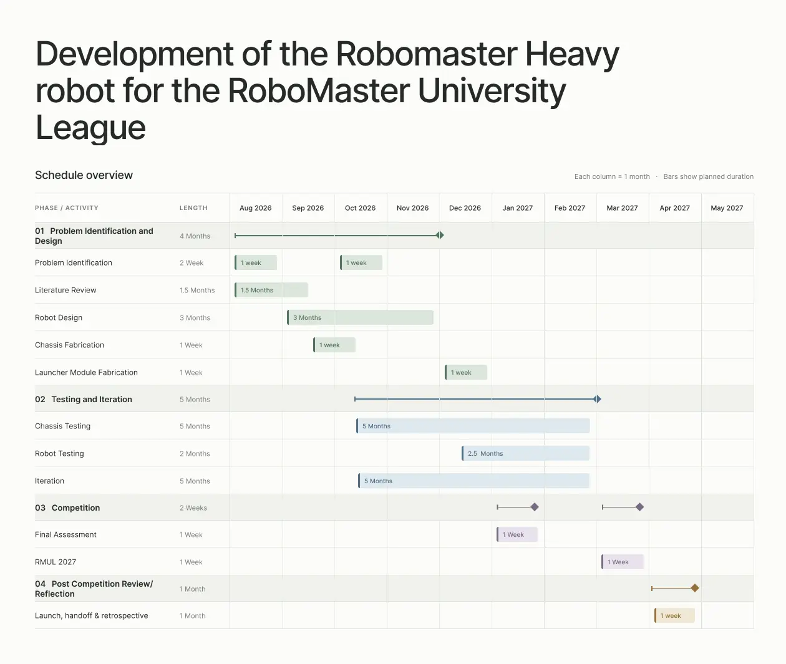

6. Semester 1 Work
Chassis Design
The Semester 1 contribution is the new Heavy chassis integration, not redesign of the pre-existing wheel-leg linkage. Reusing Calibur's serial-leg assemblies reduces cost and development time while allowing emphasis on frame loads, layout, electronics access and launcher interfaces.
Leg Analysis
CAD assessment of the existing linkage indicates a minimum height of 135 mm and maximum extended height of 405 mm.
The nominal vertical travel is 405 − 135 = 270 mm, exceeding the 200 mm step by 70 mm. This establishes geometric feasibility only; it does not prove dynamic step-climbing under the Heavy robot's full mass.
 |  |
Table 8: Serial-Leg Height Range
Each leg assembly is 153.41 mm wide. Two assemblies leave a maximum central chassis width of 600 − 2(153.41) = 293.18 mm within the stowed width limit, before clearance and manufacturing tolerances.

Figure 7: Leg Assembly Width
Structural Design
The frame must transfer loads between the leg mounts, resist asymmetric landings and survive robot-to-robot impacts. The preliminary design uses a crossed 30 × 20 mm aluminium rectangular-tube structure with 1 mm walls. The presentation estimates 530 g for the tube-frame concept. The load-path-led structural design and simulation approach was informed by Jiaolong Team structural design practice [12].
The crossed frame links the leg mounts while conserving central volume. For illustration, the tube-section second moment of area about the chosen axis is 6,392 mm⁴ versus 20 mm⁴ for a 30 × 2 mm flat plate—a ratio of about 320 for those specific sections. The two sections do not contain equal material, so this is not a demonstrated 320-fold strength advantage for equal-mass frames.


For a 25 kg design-mass estimate, a 0.20 m fall arrested over 0.10 m yields an average vertical reaction F = mg(1+h/s) ≈ 736 N. A nominal 2× load target is 1,472 N. Preliminary static FEA was run at 1,400 N (about 1.90× this estimated average load) at the leg-mount interfaces with specified fixed supports. The presentation reports a qualitatively acceptable stress distribution, but does not provide maximum von Mises stress, displacement, mesh convergence or measured impact loads; structural validation therefore remains incomplete.

Material Selection
Candidate materials for the outer protective structure were compared using the estimated mass and quoted cost for the same geometry. These are preliminary CAD estimates and prices, not purchased-part measurements.
| Candidate | Estimated mass | Quoted cost (SGD) |
|---|---|---|
| 304 stainless steel | 378 g | $117.18 |
| Aluminium 6061 | 127.81 g | $53.04 |
| Fibreglass | 117.39 g | $14.33 |
| Carbon fibre | 68 g | $18.77 |
Table 9: Outer-Structure Material Comparison (Presentation, Slide 49)
Carbon fibre offers the lowest estimated mass in this comparison, although manufacturability, mounting durability and impact performance still require verification. Material choice is therefore preliminary.
Ammunition Storage Envelope
A space claim of 186 × 120 × 111 mm provides 2,477,520 mm³ of nominal storage volume. Applying the presentation's assumed 0.64 packing fraction and 40,194 mm³ per projectile gives an idealized estimate of 39 rounds. This is not a validated discrete packing arrangement; the accessible feed-path volume, projectile diameter and loading method must be checked with a physical mock-up. A reliable 24-round capacity remains the design target.

Figure 8: Proposed Ammunition-Storage Space Claim (Presentation, Slide 50)
Electronics Integration and Maintainability
A firmware stakeholder requested that electronics be accessible from one side to simplify diagnostics. The current CAD layout therefore arranges serviceable electronics for bottom access, consistent with the three-minute turnaround objective. Cable routing, connector access, cooling and actual removal time have not yet been validated.

Figure 9: Bottom-Accessible Electronics Compartment (Presentation, Slide 51)
Preliminary Integrated CAD Prototype
The preliminary integrated CAD model combines the reused wheel-leg assemblies with the crossed chassis, side structures and proposed electronics/storage layout. It demonstrates mechanical packaging progress, but the presentation does not document physical chassis fabrication or successful robot-level testing; these are scheduled for the next phase.

Figure 10: Semester 1 Preliminary Integrated CAD Design (Presentation, Slide 52)
Robot wireframe / 3D CAD viewer
Reserved for a rotatable wireframe of the complete ASI-408 Heavy robot. No geometry has been generated from the slide screenshots: the viewer will use your actual exported CAD model.
Preferred file: ASI-408-heavy-robot.glb (one complete assembly, reasonably simplified; ideally below 20 MB). Alternative: STEP (.step/.stp) for CAD conversion, or STL (.stl) for geometry only. If exporting a SolidWorks native assembly, include the .SLDASM plus all referenced .SLDPRT files.
Electrical Architecture

7. Future Work
The immediate priority is to freeze the attachment interface, then fabricate and test the chassis and launcher systems before the 4 January 2027 video assessment. Planned validation includes: (i) full-mass 200 mm step trials and recovery after a fall; (ii) timed acquisition and attachment from the 400 mm workstation against the 60 s design goal; (iii) passive power-off retention and repeated docking trials; (iv) projectile-feed demonstrations targeting 24 rounds; (v) physical impact/deflection measurement and corroborated FEA; and (vi) a timed electronics or component replacement exercise. Failures will guide successive design iterations, followed by RMUL competition review.
8. Project Timeline
RMUL 2027 occurs in March, so the design must be functional before the January competition assessment rather than at the end of Semester 2. Key milestones are: Assessment milestones are transcribed from the 2027 participation planning information [3] and should be checked for subsequent official amendments.
Referee System Rules Exam: 09 Dec 2026 - 10 Dec 2026
RMUL Final Robot Assessment: 04 Jan 2027 - 06 Jan 2027
A working robot is targeted for 4 January 2027. Finalizing interfaces, procuring parts, manufacturing and conducting integrated validation must therefore be prioritized ahead of later optimization.
